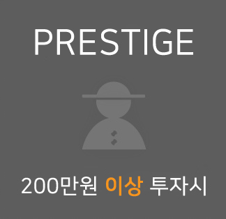
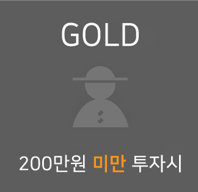

공유농장 ‘본잇(BON IT)'…귀농인의 꿈
독보적인 첨단 농법으로 최고 품질의 농작물을 독점 생산하는 것은 그들의 궁극적인 목표가 아니다.
"우리가 꿈 꿔 왔던 것은 농민과 귀농인들을 돕는 농업기술을 연구하고 장비를 만드는 것입니다.
우리가 개발한 설비가 농업 생산에 도움이 되고, 더 나아가 그 설비에서 생산된 농작물을 유통시키는 것이죠."
좋은 농작물을 저비용으로 생산할 수 있는 농업기술을 농민과 예비 농업인에게 보급하는 것이 그들이 갈 길이다.
세 청년 CEO는 아쿠아포닉스 농법이 안정 되자마자 예비 농민들이 주주가 되는 공유농장 '본잇(BON IT)'을 설립하고
2018년 크라우드펀딩에 들어갔다. 와디즈에서 한 달 간격으로 모집한 본잇 1호와 2호는 각각 법정 한도액 7억원을 모두 채웠다.
700여명의 예비 귀농인들이 모아준 자금으로 각각 700평 규모의 농장 2개를 새로 만들었다.
지난해 4월부터 순차적으로 출하가 시작돼 약 8~9개월간 팜잇 1호는 1억5천만원, 팜잇 2호는 1억2천만원의 순이익을 냈다.
본잇에서 나온 이익은 전액 배당하는 것을 원칙으로 삼았다.
200만원을 투자한 주주 1명 당 10~13만원을 배당하기로 했다. 주주들은 머지않아 귀농해 팜잇 농장을 운영하는 날을 기다리고 있다.
"농작물이 출하 된지 1년도 안됐는데 생각지도 않은 배당을 받게 돼 기쁘다고들 하세요.
하지만 저희들은 확신이 있었고 오히려 배당 금액이 목표에 도달하지 못해 아쉬워요. 내년에는 더 많이 배당 할 겁니다"

- 
-
혜택1 오픈팜데이 초대권(연 2회)_주 주 교류회 및 농업 교육 행사
혜택2 만나박스 1개월 이용권 (패밀리박스-90,000원 상당)
혜택3 귀농귀촌프로그램시 우선 분양권
- 
-
혜택1 오픈팜데이 초대권(연 1회)_주주 교류회 및 농업 교육 행사